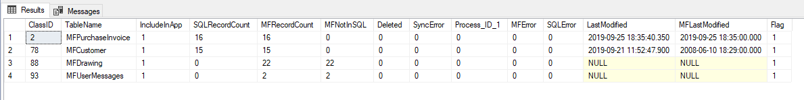

Using spMFClassTableStats¶
The spMFClassTableStats procedure is useful for
getting information about a class table or class tables
using the result in other procedures such as error trapping or class table stats
Running this procedure will produce a global temporary table of the same name ##spMFClassTableStats. There are a number of parameters to refine the processing. Executing without specifying any parameters will use the defaults
include all class tables where IncludedInApp is not null
report the current state of the AuditHistory without updating the this table
report the current state of the class tables without resetting the tables
show the temporary table as an output
not send the output in a table to the support email address
EXEC [dbo].[spMFClassTableStats]
However, using the parameters the procedure could also
run the procedure for a single table (useful when this procedure is used in custom procedures)
reset the class tables. This is useful during development. It will delete the class table, recreate it, and repopulate it. Do not use this switch for resetting large tables.
suppress to output and only create the temporary table when using this procedure in custom procedures
Select parameter @WithAudit to perform a table audit on all the tables included in the filter. The procedure will update the object versions of the class table in the MFAuditHistory table. This could take a considerable time to run through if M-Files have a large number of objects.
Warning
Running this procedure could take some time to complete when the reset or @withAudit parameters are set.
Refer to spMFClassTableStats procedure for more details about the columns.
Interpreting the result¶
The output of the procedure has significance from many angles.
If all the error columns is 0 then the last processing ran successfully with no errors. If checkedout is not 0 then there are records excluded from processing because they are checked out. Refer to Working with checkedOut objects for more details on working with checked out objects. If MFNotInSQL or SQLNotInMF columns are not null then some items was detected that was not processed
The significance of the result for a table include:
When last was the table updated?
Is the table out of line with M-Files?
Has the last updated record in M-Files been processed?
Did the update produce any errors to take note of?
Are there any checked out objects that have not been updated?
How many records are there in M-Files?
Are there any objects where required workflow is not used?
Are there any records in M-Files which has not been processed?
Reconcile the records¶
MFRecordCount = SQLRecordCount + Templates + Collections + Deleted
The class tables does not include Templates or Collections for the same class.
Deletions are removed from the class table by default. This can be controlled with a switch.
Explore spMFClassTableStats for more details on the options and switches.

Grouping the result¶
Grouping tables for use with class table stats. This is particularly useful when there are several subsets of applications in the connector and one want to have a quick overview of a particular subset.
Another use case is to Add additional tables to be included in the stats, but not included in the processing of class table updates. Set the includedInApp column to any integer above 2.
In the following example the additional tables column IncludedInApp in the MFClass table is set to 4 for all classes in the object type ‘Document’ and finally execute the stats.
UPDATE mc
SET [mc].[IncludeInApp] = 4
FROM MFclass mc
INNER JOIN MFObjectType mo
ON [mo].[ID] = [mc].[MFObjectType_ID]
WHERE mo.name = 'Document' AND [mc].[IncludeInApp] IS null
EXEC [dbo].[spMFClassTableStats]

Using result in another procedure¶
The result of the procedure can be included in global temporary table ##spMFClassTableStats. Each time the procedure is run the temporary table will be reset. Set the parameter @IncludeOutput = 1 to produce the result into the table
EXEC [dbo].[spMFClassTableStats] @ClassTableName = 'MFCustomer', @IncludeOutput = 1
SELECT * FROM ##spMFClassTableStats
Producing a result for all classes
When running the procedure with an output for all tables in will show the classes that is not includedInApp also. However, it will not get the number of records in M-Files for these classes.
Emailing the error report¶
Using the @SendReport switch will allow for sending the output report to the support email account in the MFSettings table.
The report is automatically sent when the procedure spMFUpdateAllncludedInAppTables is run. This procedure is included in the daily update agent and the report will therefore be sent if any errors are detected in the daily update agent.